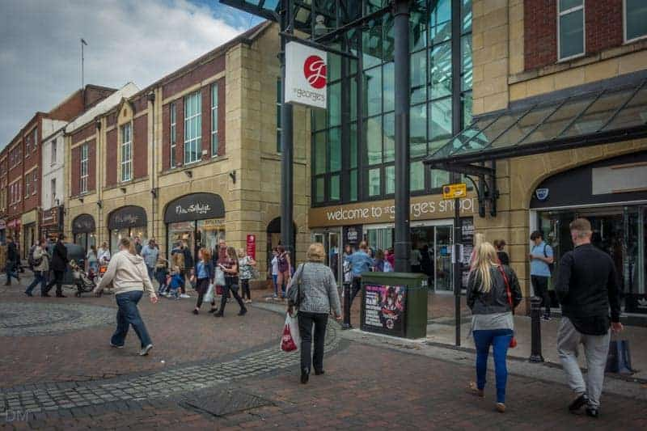

Founders Day Fresco
I was recently reflecting upon the founders day event held at Foundation Park each year. I have been taking the festival for granted and have not been properly engaging in perhaps the most popular community event of the year. In response, I contacted Ms. Sharon via email and expressed my desire to serve on the event committee. Well, you guessed it, the phone rings almost immediately and she promptly asks me to be the event committee chair. Literally, good grief! My appreciation for the years of dedicated, generous service of volunteers and sponsors has escalated beyond waht I thought I could fell for such a thing and ...